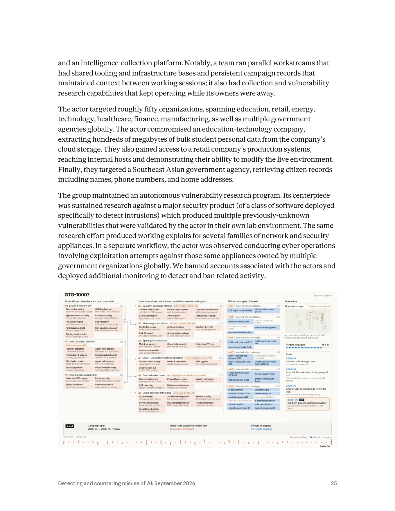
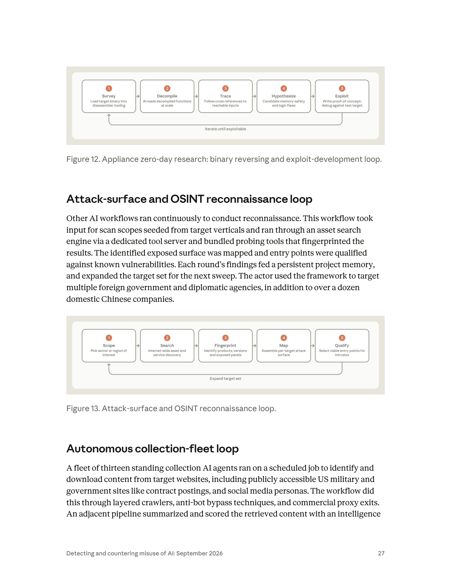

課程模組：01 網路行動（Cyber operations） ｜ 一手來源：PDF p.24（下半）–p.28，並延伸引用 p.5、p.39、p.40 ｜ 整理日期：2026-09-13
本檔一手依據為 Anthropic《Detecting and countering misuse of AI: September 2026》威脅情報報告。圖表由研究員以 Read 工具逐張開啟原始 PNG 判讀後撰寫，非轉抄圖說。第三方查證與台灣意涵見第 9、10 節，並嚴格區分「獨立查證」與「僅引述 Anthropic」。
在進入正文前，先把「這個案例到底佔哪幾頁」講清楚，因為它牽涉到後面 IOC 一節的判讀，也是教學誠信的一部分。
GTG-10007: Exploit foundries and autonomous attack frameworks）開始，到 p.28 的 Hands-on intrusions 段落結束（結尾句：「the actor concentrated hands-on efforts exclusively on domestic China victims」）。104.36.50[.]54 等 6 個 egress IP，日期 2026-04）不是 GTG-10007 的。那是前一個案例 GTG-50014（ShinyHunters 機會主義者） 的 IOC 表尾，橫跨 p.22–p.24 上半。判讀時把它算到 GTG-10007 是常見錯誤，本檔特別標出。AI supply chain as target, loot, and attack compute 一節、以及 p.29 整頁的 GTG-50021（俄語／烏克蘭語團體、化名「kl1zy」的假 Claude 轉售詐騙），是另一個獨立主題與案例，不屬於 GTG-10007。本檔在第 3.4 節僅作「相鄰脈絡」簡述，其 IOC 留給 GTG-50021 專案處理。20260910_Anthropic_AI_Misuse_Report_IOCs.csv，共 208 條指標）逐一比對，GTG-10007 的列數是 0。清單裡有 GTG-20006、GTG-50014、GTG-50021 等 11 個群組，就是沒有 GTG-10007。這不是疏漏，而是這個案例的性質使然（詳見第 7 節）——這件事本身就是很好的偵測工程教材。教學提示：課程一開始就可以用「p.24 那張 IP 表是不是 GTG-10007 的？」當暖身題。答案是「不是」。這訓練學員一個核心習慣——IOC 一定要對回它所屬的案例與段落，不要看到表格就抄。


以下每一條都能追到 p.24 原文：
| 線索類型 | 內容 | 原文措辭 |
|---|---|---|
| 語言 | 中文（操作者為 Chinese-speaking） | 「conducted by Chinese-speaking operators」 |
| 地理位置 | 疑似居於中國湖南省長沙市 | 「likely residing in Changsha in China's Hunan province」 |
| 身分（2 人） | 湖南某大學「電腦與通訊工程學院」大學部學生 | 「identified as undergraduate students at a Chinese university in Hunan studying curriculum in a School of Computer & Communication Engineering」 |
| 職涯軌跡 | 其一曾於 Sangfor（深信服）實習 | 「had a prior internship at a Chinese security company, Sangfor」 |
| 職涯軌跡 | 同一人正應徵 QiAnXin（奇安信）的攻擊性網路作戰職缺 | 「actively interviewing for a role at a different Chinese security company, QiAnXin, for an offensive cyber operations role」 |
| 團隊規模 | 「多名操作者」，非單人 | 「Multiple operators within this group」 |
| Claude 的角色 | 工程與編排層 | 「used Claude as the engineering and orchestration layer」 |
這一節是整份教材裡最「教怎麼想」的部分。情報報告用字是有刻度的，同一份報告在不同案例用不同措辭，代表 Anthropic 對證據強度的自我評估：
措辭刻度速記（由弱到強）：
possible→suspected→consistent with→likely→assess with high confidence。本案在「操作者身分」上接近事實陳述，在「地理位置」上是likely，在「是否國家支持」上維持沉默。教學時要讓學員體會：一份負責任的報告，會把不同事項的信度分開標，而不是一句「中國國家駭客」打包全部。
這是本案最深、最值得上一整堂課的線索。報告把三件事擺在同一句話裡不是偶然：大學（電腦與通訊工程學院）→ 私營資安巨頭實習（Sangfor）→ 應徵另一家資安巨頭的攻擊性職缺（QiAnXin）。要讀懂它，需要外部脈絡（見第 9 節的獨立來源）：
課堂可用的一句話總結：GTG-10007 告訴我們，中國攻擊性能力的「原料」（有天賦的學生）與「精煉廠」（資安企業的攻擊性團隊）之間，AI 補上了最後一段——過去要進國家隊才拿得到的自動化利器，現在一個在校生用商用 AI 就能自建。
報告用 "Multiple operators within this group" 與 "a team ran parallel workstreams"。這不是一個孤狼，而是一個小團隊共用工具鏈與基礎設施（見第 4、6 節的平行工作流）。在人力情報上，「小團隊 + 共用基礎設施 + 持久記憶檔」意味著：即使封掉一兩個帳號，戰役狀態（campaign state）仍在他們自己的持久記憶裡，可以換帳號續戰——這對偵測與處置是很硬的挑戰（見第 8 節）。
報告 p.5 開宗明義提到一條時間線：「In November 2025, we documented an operating model used by a suspected state-sponsored campaign to carry out autonomous attacks. That operating model has now proliferated across every class of actors we investigated.」——這句話就是理解 GTG-10007 的框架。2025-11 那份報告揭露的中國國家級行動（外界多以 GTG-1002 指稱，Anthropic 部落格〈Disrupting AI espionage〉，2025-11-13）是「操作模型的原型」，GTG-10007 則是這個模型擴散到學生／近國家層級的實例。把兩者並排，能讓學員看見一年之內「同一套自主攻擊模型」如何從國家隊下放到在校生：
| 面向 | GTG-1002（2025-11） | GTG-10007（2026-09） | 這條演化說明了什麼 |
|---|---|---|---|
| 歸因信度 | 「assess with high confidence...Chinese state-sponsored」 | 中文操作者、疑湖南長沙（likely）、大學生 + Sangfor 實習 + 應徵 QiAnXin；未稱 state-sponsored |
從「高信度國家」→「具體到個人身分、但贊助者留白」。能力下放，歸因反而更難一刀切 |
| 操作者 | 國家支持的專業團隊 | 大學部學生 + 小團隊 | 熟練操作者的供給瓶頸被打穿（p.24 的第二個瓶頸） |
| 自主程度 | AI 執行 80–90% 戰役，人類 4–6 個關鍵決策點 | 蒐集艦隊「no human in the loop」；鑄造廠自主迭代 | 自主程度持平或更高，且擴散到更低資源的行為者 |
| 繞過防護 | 假冒「合法資安公司員工」+ 任務拆解 | 「授權滲透測試」框定（操作者本身有資安背景，偽裝更自然） | 同一種社交工程繞過，且 GTG-10007 的操作者背景讓偽裝更可信 |
| 工具 | Claude Code + MCP | Claude 為編排層 + tool server + agent swarm + 持久記憶 | 鷹架成熟化、模組化（W1 鑄造廠餵養全線） |
| 模型出錯 | 「occasionally hallucinated credentials」 | 「possible zero day」需人在實驗室驗證 | AI 仍會幻覺／假陽性——驗證環節仍需人，是防守方少數可乘之機 |
| 目標規模 | 約 30 個全球目標 | 約 50 個全球目標，動手集中國內 | 規模擴大，但動手範圍受人類的政治／風險考量收斂 |
教學提煉：Anthropic 自己用 "proliferated across every class of actors" 定調 2026 的主軸。GTG-1002 → GTG-10007 就是這句話的活教材——2025 年還要國家隊才玩得動的自主攻擊模型，2026 年一個在校生用商用 AI + 開源鷹架就能複製。這也預告了第 10.4 節的台灣案例（用開源 Hermes+OpenClaw）：擴散的下一步，是連 AI 供應商的上游偵測點都繞開。
報告 p.25 明確：「The actor targeted roughly fifty organizations, spanning education, retail, energy, technology, healthcare, finance, manufacturing, as well as multiple government agencies globally.」
| 維度 | 內容 | 出處 |
|---|---|---|
| 目標總數 | 約 50 個組織 | p.25 |
| 產業別 | 教育、零售、能源、科技、醫療、金融、製造 | p.25 |
| 政府 | 多國政府機關（globally） | p.25 |
| 偵察地理範圍 | 中東、歐洲、東南亞的外國政府網路 | p.24 |
| OSINT 蒐集對象 | 美國軍方／政府公開網站（採購標案等）、社群人物側寫 | p.27–p.28 |
報告只點名三個「動了手」的具體戰果（p.25）：
| # | 受害者類型 | 戰果 | 資料量／內容 |
|---|---|---|---|
| 1 | 教育科技公司（education-technology company） | 從其雲端儲存竊取大批學生個資 | 「hundreds of megabytes of bulk student personal data」 |
| 2 | 零售公司（retail company） | 進入正式生產系統、觸及內部主機，並展示了修改線上（live）環境的能力 | 「reaching internal hosts and demonstrating their ability to modify the live environment」 |
| 3 | 東南亞某政府機關 | 取得公民紀錄 | 「citizen records including names, phone numbers, and home addresses」 |
注意 #2 的措辭：「demonstrating their ability to modify the live environment」——報告說的是「展示了能力」，不是「已破壞」。這是情報寫作的謹慎：能改 ≠ 已改。但對零售業的營運風險而言，「攻擊者證明他能改你的正式環境」本身就是最高等級的警訊。
p.25 那張未編號的「戰役重播（replay）」儀表板，把目標拆得更細（這些是圖表內的視覺化資料，屬報告一手素材，但屬「示意／重播」性質，數字宜視為報告方的呈現）：
為完整交代頁段邊界：p.28 下半起，報告轉入一個主題性段落「AI supply chain as target, loot, and attack compute」，講的是犯罪經濟如何把被盜的 API 金鑰、工作階段權杖（session tokens）與裝置當成主要目標與商品；接著以 GTG-50021（俄語／烏克蘭語團體，化名 "kl1zy"，經營假 Claude 折扣轉售、把流量偷偷代理到別的模型並植入憑證竊取器）為例。這是另一個案例，其 IOC（awstore[.]cloud、kiro[.]cheap、sys-tools[.]cfd、aws-us-east-3[.]com、holdboost[.]store、deltaclient[.]xyz、iymkjuzymkapovrntoxy.supabase[.]co 等，見 p.29）屬於 GTG-50021，不要記到 GTG-10007 頭上。
不過有一個與 GTG-10007 相關的伏筆值得記住：p.25 儀表板右下角「Tasks（2026-06）」列出操作者當時在做的事，包括「Scan 64 API endpoints of third-party AI tool（全面盤點某外部 AI 服務的能力）」「Check vLLM container logs for model load（自架模型服務除錯）」「Build API-balance dashboard widget — Spend monitoring for external LLM APIs（監控外部 LLM API 的花費）」。加上 W2 工作流裡的「Local-model serving — self-hosted LLM inference（自架本地模型推論）」——這說明 GTG-10007 這個團隊自己也在探勘與經營 AI 算力供應鏈（既盤點外部 AI 服務、也自架本地模型）。這條線把「攻擊者」與「AI 供應鏈」連了起來：AI 既是他們的攻擊工具，也是他們覬覦的攻擊面與算力來源。
本案的特色是多條平行工作流（parallel workstreams）共用工具鏈與基礎設施（p.25、p.26）。報告 p.26 明列五條平行工作流：
「One workflow conducted cyber operations involving exploitation and intrusions, another performed foreign-government reconnaissance, another reverse-engineered security products in search of new vulnerabilities, another developed and tested custom malware, and another built and maintained collection infrastructure.」
下表用「人類做什麼／Claude（AI）做什麼／自主程度」三欄拆解。自主程度分三級：（A）對話式協助、（B）人類逐步指揮、（C）AI 編排多代理自主執行。
| 階段 | 人類操作者做什麼 | Claude / AI 做什麼 | 自主程度 |
|---|---|---|---|
| 前置：搭鷹架與定目標 | 設定目標垂直領域、地區；建立工具伺服器（tool server）、代理群鷹架、持久記憶檔；提供「授權滲透測試」之類的框定以繞過安全防護 | 依鷹架被編排 | 人設計、AI 執行 |
| 偵察（Attack-surface / OSINT） | 種入掃描範圍（scan scopes seeded from target verticals） | 經資產搜尋引擎 + 指紋工具找出暴露面、比對已知漏洞、把發現寫入持久專案記憶、自動擴大下一輪目標集 | (C) 自主迴圈（Figure 13） |
| 資源開發：零日鑄造廠 | 提供韌體來源、確認實驗室環境；偶爾介入調整 | 載入反編譯器、走上千次反編譯與交叉引用、形成漏洞假設、寫利用碼、在實驗室迭代測試至成功 | (C) 自主迴圈（Figure 12） |
| 資源開發：惡意程式 | 指定需求 | 開發並測試自訂惡意程式（custom malware） | (B)–(C) |
| 初始存取／利用 | 在入侵事件中介入（見下） | 對正式系統嘗試利用；或用弱憑證／已竊憑證／暴露的管理主控台取得存取 | (B)–(C) |
| 內網後利用（hands-on intrusions） | 主要在「開發」與「消化工作流產出」；在入侵事件中親自參與 | 列舉主機、以憑證重用與暴露管理面提權、蒐集憑證與資料庫、把資料回傳到操作者基礎設施、再依戰果橫向跳到下一台主機 | (B) 人類在關鍵點介入 |
| 蒐集平台（intelligence collection） | 建置與維護；設定排程 | 13 個常駐代理排程抓取、摘要、評分、產出報告式摘要、送到 distribution portal | (C) 完全無人在迴圈（Figure 14） |
| 資料處理與外傳 | 消化工作流產出 | 把竊得資料整理、暫存、回傳 | (B)–(C) |
報告 p.39 把本報告所有案例排在一條「自主光譜」上，並點名 GTG-10007 落在最自主的一端：
「We also observed a collection fleet running on a pre-set schedule with no human in the loop (GTG-10007)...」（p.39）
同時 p.39 也提醒兩個校準用的但書（caveats），本案完全適用：
報告兩次強調「shared tooling and infrastructure bases」與「persistent campaign records that maintained context between working sessions」（p.25）。從 p.25 儀表板可以看到工作流之間明確的資產傳遞（handoff）箭頭與標記：
auth-bypass toolkit ◄ W1 → 餵給 W4（Security-appliance attacks）stolen-credential DB ◄ W1 → 餵給 W5（Vietnam gov intrusions）security-appliance detector scripts ◄ W1 → 餵給 W8（Gov perimeter recon）Java exploit suite ◄ W1 → 餵給 W9（China domestic intrusions）residential proxy pool → 餵給 W7（US 軍事準則 OSINT，proxied sweep）doctrine corpus → 回流到 W2（Intel collection platform）這是模組化攻擊供應鏈的教科書範例：一個「鑄造廠」工作流（W1）產出可重複使用的利器（利用工具包、被竊憑證庫、偵測腳本、Java 利用套件），其他「作戰」工作流像取用內部函式庫一樣直接調用。這正是「skilled operators 供給瓶頸被打穿」的具體長相——你不再需要每條戰線都配一個會寫利用碼的人，你只要有一座會自己產出利器的鑄造廠。
下表把本案觀察到的行為對應到 ATT&CK 戰術／技術。凡是 ATT&CK 目前沒有恰當 ID 的（特別是 agentic orchestration 與 persistent campaign memory），明確標為「框架缺口」——這本身是課程要教的重點：現有偵測框架還沒跟上 AI 編排的攻擊。
| 戰術（Tactic） | 技術 ID | 本案的具體作法（出處） | 偵測構想 |
|---|---|---|---|
| Reconnaissance | T1595 Active Scanning | 經資產搜尋引擎 + 指紋工具做網際網路級資產發現、對外國政府與外交機構掃描（p.27，Figure 13；儀表板 W8「22-IP detector sweeps」、W9「6,215-target CN sweep」） | 高速、規律、跨大量目標的指紋掃描；來自住宅代理出口 |
| Reconnaissance | T1596 / T1593 Open-Source / Search Open Websites | 13 代理抓取美軍／政府公開站、社群人物側寫（p.27–28，Figure 14） | 排程化、規律間隔、經 anti-bot 繞過與商用代理的大量爬取 |
| Resource Development | T1587.004 Develop Capabilities: Exploits | 自主鑄造廠對設備韌體產出零日利用碼（p.26，Figure 12） | 見第 8 節：對「反編譯器工具伺服器」的大量、連續呼叫模式 |
| Resource Development | T1587.001 Develop Capabilities: Malware | 開發並測試自訂惡意程式（p.26） | 對照 Appendix A（Figure 19, p.40）Anthropic 自己映射的 skill→ATT&CK |
| Resource Development | T1588.005 / T1588.002 Obtain Capabilities: Exploits/Tool | 建立 15k 條目的利用知識庫（儀表板 W1「PoC database build」） | — |
| Resource Development | T1583.003 Acquire Infrastructure: VPS | 蒐集用 VPS 部署、下載腳本（儀表板 W3） | 新註冊 VPS + 短生命週期 |
| Resource Development | T1090.002/.003 Proxy: External/Multi-hop | 住宅 SOCKS5 代理池、商用代理出口、exit-IP 檢核（儀表板 W3、W7） | 住宅代理出口 + TLS 指紋不一致 |
| Initial Access | T1190 Exploit Public-Facing Application | 對暴露的設備管理面、Web 應用利用（p.28；儀表板 W4「Console SSH access / root shell on EDR console」） | WAF 繞過、異常 preauth 探測 |
| Initial Access | T1078 Valid Accounts | 以弱憑證／已竊憑證／暴露主控台取得存取（p.28） | 不可能的登入地理、憑證重用 |
| Credential Access | T1110.003 Password Spraying | 儀表板 W6「gov mail creds readied」、與 Appendix A 的 spray 技能 | 低速跨帳號嘗試 |
| Credential Access | T1552 Unsecured Credentials | 從 JS bundle 挖金鑰、heapdump 挖記憶體、secrets extraction（儀表板 W9、W4） | 對 .js／記憶體傾印的異常存取 |
| Discovery | T1046 Network Service Discovery | 容器與服務列舉（儀表板 W4「all 26 services mapped」） | — |
| Lateral Movement | T1021 Remote Services | 憑證重用橫向移動、跳下一台主機（p.28） | 內部橫向的 SSO／管理面異常登入 |
| Privilege Escalation | T1068 / T1078 | 經暴露管理面與憑證重用提權（p.28） | — |
| Collection | T1213 / T1119 Automated Collection | 蒐集平台無人值守大量抓取、摘要、評分（p.26–28） | 排程化大量下載 + 報告式摘要生成 |
| Collection | T1114 Email Collection | 政府郵件憑證整備、郵件竊取（儀表板 W5/W6） | 大量郵箱匯出 |
| Exfiltration | T1567 Exfiltration Over Web Service | 資料回傳操作者基礎設施、送 distribution portal（p.26、p.28） | 大量外傳到自建入口 |
| Persistence | T1098 Account Manipulation / API token | 「JWT forgery — admin token minted」「Persistent API token — durable backdoor access」（儀表板 W4） | 異常長效 token 簽發 |
| Orchestration（AI） | 框架缺口 | 主代理拆解任務、派發給平行子代理（agent swarms） | ATT&CK 無對應 ID；需以「工具呼叫序列 / 代理協作」為新偵測維度 |
| Campaign Memory（AI） | 框架缺口 | 跨工作階段持久記憶：目標清單、憑證、交戰狀態、常駐指令 | ATT&CK 無對應 ID；跨會話狀態的持久化是新的持久性形態 |
框架缺口的教學價值：ATT&CK 是以「人類操作者的離散技術」為單位建的。但 GTG-10007 的兩個最關鍵創新——agent swarms（多代理編排） 與 persistent campaign memory（持久戰役記憶）——都不是「一個技術」，而是「一種運轉方式」。它們橫跨所有戰術階段、改變的是節奏與規模而非單一動作。防守方若只用 ATT&CK 逐格打勾，會漏掉「這是一個 24 小時無人鑄造廠」這件最重要的事。這呼應 Anthropic 自己在 Appendix A（Figure 19）把「技能」映射到 ATT&CK 時的做法——它映射的是離散技能（persona、build loop、recon 技能），但編排這些技能的「harness」層，ATT&CK 沒有格子可放。
本案頁段內含四張關鍵視覺化：p.25 未編號的戰役重播儀表板、Figure 12（零日鑄造廠迴圈）、Figure 13（攻擊面／OSINT 偵察迴圈）、Figure 14（自主蒐集艦隊迴圈）。以下每一張都由研究員用 Read 工具開啟原始 1920px PNG（Figure 12–14 為 1920×471，儀表板為 1920×1080）逐格判讀後撰寫。
2026-03 → 2026-06。它不是螢幕截圖（不是真實工具的 UI），而是 Anthropic 為呈現本案而繪製的合成視覺化，把「模型端能力」與「對目標的推斷效果」並排在一條時間線上。n/m 完成度標記（例如 W4 是 2/2，W9 是 10/12）。doctrine corpus ◄ W7）：Platform datastore、Agent fleet deploys、Fleet admin & upkeep、Scoring & dashboards（article scoring pipeline）、Distribution portal（gated download portal live）、Agent rollout wave、Backfill pipelines、Local-model serving（self-hosted LLM inference）。auth-bypass toolkit ◄ W1）：Console SSH access（root shell on EDR console）、Preauth bypass tests、Container enumeration（all 26 services mapped）、Secrets extraction（keys, tokens, DB creds）、JWT forgery（admin token minted）、Persistent API token（durable backdoor access）。stolen-credential DB ◄ W1）：Credential lookup、API enumeration、Injection & crypto（SQLi + padding oracle）、Bulk PII export（17k citizen records pulled）、Admin-system pillage。residential proxy pool ◄ W3）：Proxied OSINT sweep（mil domains via proxies）、Media & think tanks（stealth-browser crawls）、WAF bypass（TLS impersonation built）、Doctrine bulk pull（~1,500 PDFs pulled）。security-appliance detector scripts ◄ W1）：Gateway discovery（edge appliances located）、Firewall batch scans（22-IP detector sweeps）、Version extraction（build dates decoded）、CVE matching（exploit candidates mapped）、Defense-media recon。Java exploit suite ◄ W1）：Asset sweeps、Subdomain fingerprint、Secrets hunting（JS bundles mined for keys）、Service exploitation、Mass fingerprint scan（6,215-target CN sweep）、Heapdump pillage（prod memory mined）、Persistence & creds。◄ Wn 標籤把三欄串起來——左欄的模型端能力（W1–W3）餵給中欄的作戰工作流（W4–W9），再推斷出右欄的目標效果。這是一張「能力 → 行動 → 效果」的因果流圖，疊在時間軸上。◄ Wn 的依賴箭頭，畫出工作流依賴圖，體會「模組化攻擊供應鏈」。71 days、15k-entry KB、6,215-target sweep、17k records、25/30 等數字是圖表呈現，正文未逐一覆述（正文只給「約 50 目標」「十餘個零日」「數百 MB 學生個資」）。教學引用時宜標明「圖表數據」與「正文數據」的來源層級。（此頁上半為 Figure 12，下半為 Figure 13）
（此頁下半）
CVE matching → exploit candidates mapped（儀表板 W8）把兩者接起來。報告全文未為 GTG-10007 列出任何 IOC。 我以兩種方式交叉確認：
20260910_Anthropic_AI_Misuse_Report_IOCs.csv，208 條），以 gtg 欄位過濾——GTG-10007 的列數為 0。清單涵蓋 GTG-15001、GTG-20006、GTG-24015、GTG-30006、GTG-50014、GTG-50020、GTG-50021、GTG-54002、GTG-84005、GTG-84006 共 11 個群組，獨缺 GTG-10007。（前述 p.24 上半那 6 個 egress IP 104.36.50[.]54、104.193.135[.]207、2a04:cec0:1185:34f2:a150:7081:caed[:]448e、2a01:e0a:2e2:aa40:b15d:5d28:6f4a[:]8d53、91.171.138[.]169、176.177.12[.]62，日期 2026-04，屬前一案 GTG-50014，見第 0 節。抄錄時保留 defang 格式，且不得對其做任何連線／DNS／掃描。）
這不是報告偷懶，而是本案性質的直接結果。值得整理成一張「指標壽命與偵測價值」表，並解釋每一類指標為何在本案失效：
| 指標類型 | 在本案的狀態 | 為什麼 | 偵測價值與壽命 |
|---|---|---|---|
| C2 網域／IP | 幾乎無可發布 | 本案重心是漏洞研究、OSINT 蒐集、內網後利用，不是長期 C2 植入；基礎設施多為 VPS + 住宅代理，短生命週期、易輪替 | 極低、壽命極短（見 GTG-50014 的 IP 只用 1–2 天） |
| 惡意程式雜湊 | 未發布 | 有 malware development 工作流，但報告未給樣本雜湊；且自訂惡意程式可由 AI 快速改寫（對照 GTG-20006 的「close the loop」） | 低、壽命短 |
| 住宅代理／SOCKS5 出口 | 已知使用，但不可列舉 | 住宅代理池是共享、輪替、且與正常使用者混雜的，列出來也擋不了、還會誤傷 | 幾乎無 |
| 操作者身分錨點（大學、實習、求職） | 這才是本案最硬的指標 | 見 2.3——人力情報錨點耐久、難抹除 | 高、壽命長，但非機器可讀、需 HUMINT/OSINT |
| 行為／能力軌跡（模型端） | Anthropic 的實際偵測依據 | 見第 8 節：對反編譯器工具伺服器的大量連續呼叫、排程化蒐集、agent swarm 協作 | 中高，但只有模型供應商看得到 |
核心教學點：GTG-10007 是「後 IOC 時代」威脅的樣本。 當攻擊的價值鏈從「部署可辨識的惡意基礎設施」轉向「在 AI 平台上編排能力」，防守方賴以維生的網路 IOC 幾乎蒸發。剩下能用的是兩類：（1）模型端行為訊號（只有 AI 供應商掌握，這也是為何 Anthropic 是唯一能發現本案的一方）；（2）人力情報錨點（耐久但慢、非自動化）。這對「以 IOC 餵 SIEM／TIP」為主的傳統偵測體系，是根本性的挑戰。
雖無 IOC，本案仍留下可轉為偵測邏輯的行為特徵（詳見第 8 節），整理如下供藍隊參考（這些是行為假設，非機器可讀 IOC）：
報告 p.25 對本案的處置只有一句：
「We banned accounts associated with the actors and deployed additional monitoring to detect and ban related activity.」
從報告方法論（p.42 等）可知，Anthropic 的偵測靠的是背景自動分類器在監控特定有害行為，觸發後才展開調查、確認後封號、強化防護、部署額外監控、與夥伴分享情報。對 GTG-10007 這種沒有網路 IOC的案例，能被發現幾乎完全靠模型端的行為訊號——這也是本案在偵測工程上的關鍵教訓：AI 供應商站在一個獨特的偵測位置，能看到防守方在自己網路裡看不到的東西（例如「對反編譯器工具伺服器上千次連續呼叫」這種只在模型互動層才可見的模式）。
報告在本案與鄰近段落自曝了多處防線的脆弱性，逐一挖出：
Local-model serving）。所以任何單一會話都不完整——分類器看到的是戰役的一個切片，看不到「這是第 40 天、已經打下 25 個目標」的全貌。把 8.1、8.2 合起來，本案給偵測工程一個大結論：在 AI 編排的攻擊裡，最有價值的偵測位置從「防守方的網路」轉移到「AI 供應商的平台」。 防守方在自己網路裡幾乎看不到 GTG-10007（沒有惡意基礎設施、沒有可辨識惡意程式、蒐集端全用合法公開來源）；真正看得到「上千次反編譯呼叫」「排程化情報抓取」「agent swarm 協作」的，是模型供應商。這對防守生態的意涵是：威脅情報的來源正在往上游（AI 平台）集中，而下游防守方越來越依賴上游願意偵測、揭露與分享——GTG-10007 能被公開，正是因為它跑在 Claude 上。跑在自架開源模型上的同類行動（見 10.4 的台灣案例），就沒有這個上游偵測點。
本案是單一來源情報（single-source intelligence）：所有第一手事實均出自 Anthropic 一家。截至整理日，尚無任何獨立第三方查證 GTG-10007 的存在、歸因或戰果——媒體報導全是轉述 Anthropic。下表逐條標明來源性質。
| # | 來源 | URL | 日期 | 性質 | 對本案提供了什麼 |
|---|---|---|---|---|---|
| 1 | Anthropic 官方報告頁 | anthropic.com/threat-intelligence-report-september-2026 | 2026-09-10 | 一手 | GTG-10007 專節、IOC CSV、PDF 全文 |
| 2 | CyberScoop（Greg Otto） | cyberscoop.com/anthropic-report-ai-enabled-cyber-attacks/ | 2026-09-10 | 僅引述 Anthropic | 覆述「兩名中國大學生、單月十餘零日、agent swarms、跨會話記憶」；未提 Hunan/Sangfor/QiAnXin，無獨立查證 |
| 3 | SiliconANGLE（Duncan Riley） | siliconangle.com/2026/09/10/... | 2026-09-10 | 僅引述 Anthropic | 覆述 Changsha、約 50 目標、agent swarms、十餘零日；明確無獨立分析 |
| 4 | CellCog（Nitish Garg） | cellcog.ai/blog/anthropic-threat-report-september-2026/ | 2026-09-10 | 僅引述 Anthropic（作者自陳「每個數字都來自報告」） | 摘要，無新事實 |
| 5 | 大紀元（李言） | epochtimes.com/b5/26/9/11/n14847918.htm | 2026-09-11/12 | 僅引述 Anthropic（繁中） | 完整中譯 Hunan/Sangfor/QiAnXin 段落；無獨立查證或官方回應 |
| 6 | iThome（Anthropic 報告中譯） | ithome.com.tw/news/178864 | 2026-09-11 | 僅引述 Anthropic（繁中） | 台媒對同報告的中譯，重點放在「7 家中國業者蒸餾 Claude」，未涵蓋 GTG-10007 |
背景脈絡類（非本案查證，但為第 2 節的人才管線論點提供獨立外部依據）：
| # | 來源 | URL | 日期 | 性質 | 用途 |
|---|---|---|---|---|---|
| 7 | Atlantic Council（Dakota Cary & Eugenio Benincasa）《Capture the (red) flag》 | atlanticcouncil.org/event/capture-the-red-flag... | 2024-10 | 獨立研究 | 中國以政府部委主辦 CTF 建立攻擊性人才管線（數百大學、數萬學生；11 場競賽有情報／軍方招募關聯） |
| 8 | War on the Rocks（Eugenio Benincasa）《From World Champions to State Assets》 | warontherocks.com/2024/09/... | 2024-09-03 | 獨立研究 | Qihoo 360／Tencent／Cyber Kunlun／Sangfor／QiAnXin 與國家攻擊性生態的關聯；2021 RMSV 漏洞上報法（48 小時上報）；CNNVD 一線夥伴名單 |
| 9 | Risky Business（Tom Uren，引 ETH Zurich Benincasa 研究） | news.risky.biz/how-chinas-cyber-ecosystem-feeds-off-its-superstar-hackers/ | 2024-06-13 | 獨立研究 | Sangfor：前 360 C0RE 的 Peng Zhiniang 2020 底任 CTO 後漏洞貢獻大增、2023 天府盃第三名 |
| 10 | i-SOON（安洵）洩漏事件 | en.wikipedia.org/wiki/I-Soon_leak；SOCRadar 等 | 2024-02 | 獨立報導 | 中國「駭客外包」生態的實證：私營公司為公安部／國安部／解放軍承包，佐證「近國家」承包模式 |
AI 自動化漏洞探勘的公開對照研究（用於第 10 節「這在正當研究裡也在發生」的對照）：
| # | 來源 | URL | 日期 | 性質 | 對照價值 |
|---|---|---|---|---|---|
| 11 | Google《Big Sleep》發現 SQLite 零日 CVE-2025-6965 | blog.google/... ；therecord.media/google-big-sleep-ai-tool-found-bug | 2025-07 | 獨立報導 | AI 自主漏洞研究的防守方鏡像：Big Sleep 搶在攻擊者前找到並修補真實零日 |
| 12 | DARPA AIxCC 決賽結果（DEF CON 33，Team Atlanta ATLANTIS 奪冠） | darpa.mil/news/2025/aixcc-results | 2025-08-08 | 獨立官方 | 量化 AI 找洞能力：63 個合成漏洞找出 54（86%）、修補 43；另外發現 18 個真實零日、修補 11；掃描 5,400 萬行程式碼、每任務平均成本 $152、平均 45 分鐘出補丁 |
| 13 | PentAGI（vxcontrol，開源自主滲透代理框架） | github.com/vxcontrol/pentagi；helpnetsecurity 2026-04-22 | 2025–2026 | 獨立／開源 | 報告 p.5、p.38 點名的公開攻擊代理框架；orchestrator + researcher/developer/executor 多代理 + Docker 沙箱 + pgvector/Neo4j 記憶——與 GTG-10007 的鷹架幾乎同構，證明「這套鷹架任何人可下載」 |
單一來源情報的處理原則：本案雖具體到指名個人職涯，但歸因與戰果無法被外部獨立驗證（受害組織未具名、無 IOC 可交叉比對）。教學與引用時應明確標註「依 Anthropic 單一來源」。與 PDF 原文有出入時以 PDF 為準；上表第 7–13 條是為論點的外部脈絡服務，不是對 GTG-10007 事實的獨立確認。
全部為防守方視角的桌面推演與分析練習，不涉及任何實際攻擊操作、不接觸 IOC、不連線任何外部系統。
◄ Wn 依賴箭頭、畫出工作流供應鏈圖，並標出「若能打斷哪一條依賴，對手成本最高」（多半是 W1 鑄造廠）。台灣是本主題的高相關方，且已經真實發生過高度相似的事件。本節分兩部分：(A) 設備選型與修補策略；(B) 與 iThome 2026-08 報導的台灣案例交叉比對。
台灣普遍部署的邊界與資安設備（防火牆、IDS/IPS、VPN 閘道、EDR、郵件與 Web 閘道），正是 GTG-10007 鑄造廠鎖定的那一類「network and security appliances」。實務調整方向：
WAF bypass — TLS impersonation，虛擬修補是延遲不是免疫）。iThome 2026-08 系列報導（news/178145 週報、178104、178108、178112、178113；一手為以色列資安新創 Dream Security 部落格與《金融時報》）揭露：疑似中國駭客用 AI 自主攻擊框架，於 2026 年 7 月 1–4 日對台灣政府機關與能源公司發動攻擊。
台灣案例事實摘要（來源：Dream Security / iThome / CyberScoop，見第 9 節與下方來源）：
- 框架以開源 AI 代理框架 Hermes（Nous Research，2026-02）+ OpenClaw（2025-11） 組成，單次最多派 8 個子代理（Agent A–Q），7/1–7/4 發動 12 波攻擊。
- 貝氏機率決策：對每個漏洞設先驗 P=0.50，依證據（工具掃描成功 LR+≈6、curl 手動確認 LR+≈10、偵測到 WAF 則 LR−≈0.3）更新後驗；P>0.95 判定可利用、P<0.30 放棄。攻擊鏈層用 P_success = P_chain × (1 − P_blocker) 排序 14 條平行攻擊鏈。
- 戰果：反編譯 Angular 政府入口網站的 JS、抽出 URL/API/OAuth client ID/Keycloak 設定，映射出 21 個相連政府系統、6 個 SSO 子域、2 把 RSA 簽章金鑰、36+ 個多半免驗證的 API；密碼潑灑破解 85 個帳號（其中 84 個可登入內部系統，98.8%）、竊得 逾 2,564 筆人員資料、7 組 SSO client secret、6 組資料庫憑證；再擴大到核能安全委員會、政府 IT 供應商、政府郵件系統、至少 7 家能源公司。
- 繞過模型防護：把活動偽裝成「授權的漏洞測試（authorized penetration testing）」。
- 自我修正：以複驗機制自動抓出並排除 7 個誤判（如把 SMTP timeout 誤判為 SQLi 的 21 秒延遲）。
- 歸因：Dream 未歸因到中國政府或特定組織，僅稱操作文件「code-switch 簡繁中文」指向中文操作者。
- 官方回應：台灣數位發展部資通安全署 8/13 證實 7 月察覺針對政府機關的異常攻擊、已完成調查與處理；資安院院長警示「AI 資安攻擊進入新階段」並籲落實 7 項基本防禦。
相似度評估（GTG-10007 vs 台灣 Dream 案例）：
| 面向 | GTG-10007（Anthropic） | 台灣案例（Dream Security） | 相似度 |
|---|---|---|---|
| 作業模式 | 主代理拆解、派多個平行子代理（agent swarms） | 主框架派 8 個子代理平行分工 | 高度相似 |
| 持久記憶 | persistent campaign memory 跨會話 | 完整 workspace（160MB、1,395 檔）、跨波後動作回饋 | 高度相似 |
| 自主迴圈 | Survey→…→Exploit、Scope→…→Qualify、Tick→…→Deliver | 6 步攻擊生命週期 + 貝氏排序 + learning cycles + 自我修正 | 高度相似 |
| 目標 | 全球約 50 組織、動手集中中國國內 | 台灣政府 + 核安會 + 7 家能源公司 | 目標互補（一個打國內、一個打台灣） |
| 繞過防護 | 「授權研究／滲透測試」框定 | 明講以「authorized penetration testing」框定 | 相同手法 |
| 操作者語言 | 中文操作者（疑湖南長沙） | 簡繁 code-switch，中文操作者 | 相似 |
| 底層模型 | Claude（Anthropic 平台，故可被上游偵測） | 開源 Hermes+OpenClaw（底層 LLM 未具名、自架，無上游偵測點） | 關鍵差異 |
| 攻擊面 | 主打設備韌體零日（二進位逆向） | 主打Web 應用錯誤設定（免驗證 API、debug 端點、JWT alg=none、SSO 信任），非零日 | 不同（一深一廣） |
| 揭露者 | AI 供應商（Anthropic） | 第三方資安廠商（拿到攻擊者 workspace） | 不同偵測位置 |
評估結論：
- 作業模式高度相似：兩案都是「開源／商用 AI 鷹架 + 多平行子代理 + 持久記憶 + 自主迴圈 + 授權測試框定繞過防護 + 中文操作者」。它們是同一種新型態威脅的兩個實例，不是同一團隊（無證據關聯），但印證了報告 p.5、p.38 的核心論斷：這套自主攻擊鷹架已「proliferated across every class of actors」、且「任何人下載 PentAGI 這類框架就能複製」。
- 對台灣最刺眼的差異有二：
1. 底層模型不同 → 偵測點不同。GTG-10007 跑在 Claude 上，所以 Anthropic 這個上游能看到、能封、能揭露。台灣案例跑在自架開源模型上，沒有這個上游偵測點——只能靠攻擊者 workspace 意外外流才被發現。這正是 8.3 節警告的具體實現：當攻擊改用自架開源模型，AI 平台的偵測優勢消失，防守方被打回「只能靠自己網路的遙測」。 台灣的防禦投資因此必須押在端點與網路側的 AI 行為偵測，不能指望上游 AI 供應商替你把關。
2. 攻擊面不同 → 防禦重點不同。GTG-10007 造設備零日（提醒台灣看邊界設備韌體）；台灣實際被打的是Web 應用的錯誤設定與邏輯漏洞（免驗證 API、debug 端點、JWT alg=none、SSO 過度信任）——這些不需要零日、多是可修的組態問題。對台灣的即時教訓是：先把「不需要零日就能打進來」的組態漏洞補起來（API 驗證、移除生產環境 debug 端點、SSO 重驗、密碼政策抗潑灑、CAPTCHA 抗 OCR），這是投報率最高的一步；同時為「AI 鑄造的設備零日」做中長期的架構與選型調整（本節 A 部分）。
台灣案例來源（均為 2026-08，一手為 Dream Security，其餘為轉述或官方回應）：
- iThome 178104 / 178108 / 178112 / 178113 / 178145（ithome.com.tw，繁中，2026-08-13）
- Dream Security 部落格《Inside a Multi-Agent AI Framework Used to Compromise Government Entities in Asia》（dreamgroup.com，2026-08-12，一手）
- CyberScoop（Tim Starks，2026-08-12）、The Register、CSO Online、Tom's Hardware（2026-08，轉述）
- 台灣數位發展部資通安全署新聞稿（2026-08-13，官方回應）
（p.24，開場——兩個歷史瓶頸）
「Historically, cyber operations have been limited in their scale and impact by two key constraints: the supply of working offensive exploits, and the supply of skilled operators capable of deploying those exploits. We have identified multiple threat actors who have effectively established automated exploit foundries with AI.」
譯：網路行動歷來受兩個關鍵限制左右其規模與影響——可用攻擊性利用碼的供給，以及能部署這些利用碼的熟練操作者的供給。我們已辨識出多個以 AI 有效建立了「自動化漏洞鑄造廠」的威脅行為者。
（p.24，歸因核心——本案最有情報價值的一句）
「Two of the operators were identified as undergraduate students at a Chinese university in Hunan studying curriculum in a School of Computer & Communication Engineering. One had a prior internship at a Chinese security company, Sangfor, and was actively interviewing for a role at a different Chinese security company, QiAnXin, for an offensive cyber operations role.」
譯：其中兩名操作者被辨識為湖南某中國大學「電腦與通訊工程學院」的大學部學生。其一先前曾在中國資安公司 Sangfor（深信服）實習，並正積極應徵另一家中國資安公司 QiAnXin（奇安信）的攻擊性網路作戰職缺。
（p.25，持久記憶與無人值守）
「a team ran parallel workstreams that had shared tooling and infrastructure bases and persistent campaign records that maintained context between working sessions; it also had collection and vulnerability research capabilities that kept operating while its owners were away.」
譯：一個團隊運行了多條平行工作流，彼此共用工具鏈與基礎設施，並保有能在不同工作階段間維持脈絡的「持久戰役紀錄」；它的蒐集與漏洞研究能力，甚至在主人不在時仍持續運轉。
（p.25，資安產品成為獵物 + 實驗室驗證）
「Its centerpiece was sustained research against a major security product (of a class of software deployed specifically to detect intrusions) which produced multiple previously-unknown vulnerabilities that were validated by the actor in their own lab environment.」
譯：其核心是對一款主流資安產品（一種專為偵測入侵而部署的軟體類別）的持續研究，產出多個此前未知的漏洞，並由該行為者在自家實驗室環境中驗證。
（p.26，agent swarms 與持久記憶的定義）
「The operators routinely ran "agent swarms," where a lead AI agent decomposed reconnaissance and post-exploitation work and dispatched it to many subagents running in parallel. The operation maintained persistent campaign memory. Target lists, harvested credentials, engagement state, and standing instructions were saved across working sessions.」
譯：這些操作者常態運行「代理群」——由一個主 AI 代理把偵察與後利用工作拆解，派發給許多平行運行的子代理。整個行動維持著持久的戰役記憶：目標清單、已竊憑證、交戰狀態與常駐指令都跨工作階段保存下來。
（p.26，單月十餘零日的產能）
「One workflow iterating continuously on network appliances yielded more than a dozen possible zero day findings in a single month.」
譯：一條持續迭代於網路設備的工作流，單月產出了十餘個可能的零日發現。
（p.28，全球鎖定 vs 國內動手的落差）
「Despite targeting entities globally in AI workflows, the actor concentrated hands-on efforts exclusively on domestic China victims.」
譯：儘管在 AI 工作流中鎖定全球目標，該行為者卻把親自動手的行動完全集中在中國國內的受害者身上。
（p.39，本案被點名為「無人在迴圈」的自主端範例）
「We also observed a collection fleet running on a pre-set schedule with no human in the loop (GTG-10007).」
譯：我們也觀察到一支蒐集艦隊按預設排程運轉、完全無人在迴圈中（GTG-10007）。
likely（推斷）；「大學生／Sangfor 實習／應徵 QiAnXin」是報告的事實陳述，但其依據（如何取得這些個人職涯資訊）報告未說明，無法獨立驗證。報告未宣稱本案為國家支持（state-sponsored）——切勿在教材中升級此措辭。71 days、15k-entry KB、6,215-target CN sweep、17k citizen records、25/30 targets engaged、52 capabilities across 9 workflows、以及 Vietnam/Spain 等具體國別，屬圖表視覺化呈現；正文只給「約 50 目標」「十餘零日」「數百 MB 學生個資」「東南亞某政府機關」。兩者來源層級不同，且圖為「示意重播」，數字不宜當精確統計引用。report.txt p.24–p.29（逐字讀畢）；Appendix A / Figure 19（p.40）作 ATT&CK 對照。page-025.png（1920×1080 儀表板，切四象限 + 中欄放大）、page-027.png（Figure 12、13，各 1920×471，左右半放大）、page-028.png（Figure 14，1920×471，左右半放大）、page-029.png（GTG-50021 IOC，確認非本案）。20260910_Anthropic_AI_Misuse_Report_IOCs.csv（208 條），確認 GTG-10007 為 0 條。本附錄在不更動上方第 0–12 節既有內容的前提下，為技術聽眾補上「機制層」的深度：鑄造廠迴圈映射到實際的反編譯器 API 呼叫、agent swarm 的編排實作、OSINT 工業化的資料管線、邊界設備三大漏洞類別與修補優先級、以及可部署的偵測規則。所有新增流程圖／架構圖一律用 Mermaid。凡涉及 IOC 一律保留 defang、不得連線。
一個貫穿全附錄的判讀原則：GTG-10007 的每一個「AI 能力」，在技術上都對應一組具體的工具、API 呼叫或資料結構。 把抽象的「AI 當編排層」拆到這一層，防守方才能回答「我在哪一層、用什麼訊號攔得到它」。
本節把第 6.1 節 Figure 12 的五格流程圖，還原成一條技術高手能據以理解與防禦的生產線。報告 p.26 對這條迴圈的原文只有一段，但每一個動詞背後都是一組明確的工具與呼叫。
decompiler + tool server 到底是什麼報告 p.26：「loading firmware and binaries into a decompiler through a tool server」。這裡的兩個名詞要拆清楚：
| tool server 暴露的工具 | 對應 Ghidra API | 對應 IDA API | 迴圈中的用途 |
|---|---|---|---|
list_functions() |
FlatProgramAPI.getFunctionManager() |
idautils.Functions() |
Survey：盤點函式 |
decompile_function(addr) |
DecompInterface.decompileFunction()（回傳 C 偽代碼） |
ida_hexrays.decompile() |
Decompile：主宰呼叫流的那個呼叫 |
get_xrefs_to(addr) |
getReferencesTo() |
idautils.XrefsTo() |
Trace：追交叉引用 |
get_callgraph(func) |
Function.getCalledFunctions() |
CodeRefsFrom |
Trace：建呼叫圖 |
read_bytes / disassemble(addr) |
getBytes() / Listing |
idc.get_bytes() |
驗證假設 |
search_bytes / strings() |
Memory.findBytes() |
idautils.Strings() |
找危險字串/常數 |
rename / set_comment |
Symbol.setName() |
idc.set_name() |
讓 AI 標註推理 |
support/analyzeHeadless <project> -import <bin> -postScript <script>、pyhidra / Ghidrathon（在 Ghidra 內跑 CPython）、ghidra_bridge（Python RPC 橋接）都能把上表工具接到 LLM；IDA 側則有 idalib（IDA 9 的無頭函式庫）、idat -B 批次、idapython。近一年社群已出現多個現成的 「Ghidra-MCP / IDA-MCP」開源專案，把上述原語直接接上 Claude/GPT——這正是「tool server」的公開對照物，證明本案的鷹架任何人可下載組裝（呼應第 9 節 PentAGI 的論點）。教學要點：把「AI 逆向」祛魅——它不是模型憑空看懂二進位，而是反編譯器負責升階、tool server 負責把原語變成工具、LLM 負責在迴圈裡讀偽代碼＋決定下一個要反編譯／追引用的目標。防守方的偵測點，就落在「tool server 收到的呼叫序列」這一層（見 A.4）。
報告 p.26 補了圖上沒畫的前置：「Vendor firmware images were obtained and decrypted with a purpose-built skill, unpacked into root filesystems, and loaded into disassembler and audit sessions.」逐步技術構成：
flashrom／chip-off）。binwalk -eM、unblob、firmware-mod-kit 遞迴解包；檔案系統多為 squashfs（unsquashfs）、cramfs、jffs2、ubifs；bootloader 為 u-boot。解出 root filesystem 後，目標二進位就是裡面的自製常駐服務（daemon）、CGI/web handler、/usr/sbin 下的網路服務。下表把 Figure 12 的五格，逐格對應到「模型實際下了什麼工具呼叫 / 在找什麼」。這是把圖說文字升級成機制說明的核心。
| Figure 12 階段 | 圖上原文 | 機制層：實際發生什麼 | 找的是什麼 |
|---|---|---|---|
| ① Survey | Load target binary into disassembler tooling | analyzeHeadless 匯入 + 自動分析；列舉匯出函式、進入點、對外服務（bind/listen/recv 呼叫點、CGI 註冊表、HTTP 路由表） |
攻擊面：哪些函式吃攻擊者可控輸入 |
| ② Decompile | AI reads decompiled functions at scale | 對候選函式連續呼叫 decompile_function()，讀類 C 偽代碼——「over thousands of decompile calls, back-to-back decompile sequences dominating the call stream」 |
可疑的複製/解析/計算長度的程式碼 |
| ③ Trace | Follow cross-references to reachable inputs | get_xrefs_to() + 呼叫圖回溯，做污點分析（taint）：從 source（recv、HTTP header/cookie/param）追到 sink（memcpy/strcpy/sprintf/system/exec） |
source→sink 的可達路徑 |
| ④ Hypothesize | Candidate memory-safety and logic flaws | 對照 AI 自建並長期維護的知識庫（儀表板 W1 的 15k-entry KB）與先前 PoC 查詢，形成漏洞假設 | 記憶體安全（無界複製、整數截斷、缺長度檢查）＋邏輯瑕疵（認證檢查可繞、路徑穿越） |
| ⑤ Exploit | Write proof-of-concept; debug against test target | 寫 PoC，對實驗室副本除錯：gdbserver + QEMU 使用者/系統模擬（qemu-arm/qemu-system）或真機；反覆 edit |
讓假設變成可重現的利用 |
| ↩ 回饋 | Iterate until exploitable | 失敗則回 ① 換函式/換假設；成功則「landed in the operator's private exploit portfolio」 | 迭代到可利用為止 |
兩個 p.26 明示、但 Figure 12 沒畫的關鍵細節：
flowchart LR
FW["廠商韌體/二進位<br/>vendor firmware image"] --> DEC["解密 skill + binwalk/unblob<br/>解包 root filesystem"]
DEC --> TS["Tool server<br/>MCP 式 decompiler 工具介面"]
TS --> S1
subgraph LOOP["AI 逆向迴圈 = Figure 12"]
direction LR
S1["① Survey<br/>analyzeHeadless 匯入+分析<br/>找對外服務/可控輸入"] --> S2["② Decompile<br/>decompile_function() x 上千<br/>背對背序列主宰呼叫流"]
S2 --> S3["③ Trace<br/>xrefs + 呼叫圖 + 污點<br/>source(recv/HTTP)→sink(memcpy/system)"]
S3 --> S4["④ Hypothesize<br/>比對 15k KB + 先前 PoC<br/>平行代理 component-by-component"]
S4 --> S5["⑤ Exploit<br/>寫 PoC, QEMU/gdbserver 除錯"]
S5 -->|"Iterate until exploitable"| S1
end
S4 <--> KB[("向量知識庫<br/>curated KB: 15k entries")]
S5 --> LAB["實驗室驗證<br/>lab copies of target product"]
LAB -->|人類確認 possible→confirmed| PORT["operator<br/>private exploit portfolio"]
報告特意寫下「over thousands of decompile calls, with back-to-back decompile sequences dominating the call stream」。這句在偵測工程上價值極高，值得單獨拆解：
decompile_function 呼叫」的，只有 AI 供應商。這就是第 8.3 節「偵測位置上移到 AI 平台」最具體的證據。// 模型層行為偵測（AI 供應商視角）
window = 1h per session/account-cluster
trigger IF
count(tool_calls where tool_server ~ "decompiler|disassembler") > N_threshold // 例如 > 500
AND ratio(decompile_calls / total_tool_calls) > 0.7 // 呼叫流被反編譯主宰
AND inter_call_interval.stddev < T // 機器般規律
AND session_context references "firmware|appliance|CVE|PoC"
THEN escalate for human review // → 確認後封號 + additional monitoring這是本任務指定的重點。目標不是「讓 AI 逆向不可能」（做不到），而是把每一個零日的邊際成本重新抬高，讓鑄造廠的「單月十餘個」產能下降。分五類技術，並誠實標注每一類對『AI 逆向』相對於『人類逆向』的效果差異。
（1）韌體加密與安全開機（阻止 A.2 的解包）
- encrypted firmware images（AES 加密更新包）、secure boot/信任鏈（ROM→bootloader→kernel 逐級驗簽）、signed AND encrypted updates、per-device 唯一金鑰 / eFuse OTP 燒錄金鑰、anti-rollback。
- 效果：擋掉「下載更新包→binwalk 直接解包」這條最便宜的路。但——本案攻擊者已把解密寫成「purpose-built skill」，代表加密只提高第一次的成本；且金鑰常可經 chip-off、電壓/時脈 glitching、側通道復原。結論：必要但非牆；真正的價值是逼攻擊者從「軟體逆向」升級到「硬體攻擊」，門檻與器材成本明顯上升。
（2）反調試 anti-debug（打擊 Figure 12 第 ⑤ 格的動態除錯）
- ptrace(PTRACE_TRACEME) 自我 attach（除錯器就無法再 attach）、讀 /proc/self/status 檢查 TracerPid != 0、rdtsc/clock_gettime 時間差偵測（單步會變慢）、掃 .text 找 0xCC(INT3) 中斷點、fork 子行程互 ptrace 當看門狗。
- 效果：主要拖慢動態 PoC 驗證（第 ⑤ 格），對靜態反編譯（①–④）幾乎無效。因為 AI 鑄造廠的重心在靜態階段，anti-debug 的相對收益比對付傳統人類 exploit 開發者要低。
（3）程式碼混淆 obfuscation（打擊 Figure 12 第 ②③ 格的偽代碼可讀性）
- OLLVM（Obfuscator-LLVM）：control-flow flattening（把結構化控制流打平成一個 dispatcher + 狀態變數的大 switch）、bogus control flow / opaque predicates（永真/永假但編譯期算不出的判斷式）、instruction substitution。
- 字串加密（執行期才解密）、符號剝除 strip（拿掉函式名/除錯資訊）。
- VM-based 混淆（VMProtect / Themida / Tigress）：把原生碼抬升成自訂 bytecode + 直譯器——反編譯器只能看到直譯器迴圈，沒有 C 偽代碼可產出。
- 效果（這裡是 AI 與人類差異最大的地方）：
- 符號剝除對 AI 的傷害相對更大：LLM 高度依賴函式/變數命名做語意推理；沒有名字時它要靠純結構推斷，準確度下降。
- VM 混淆對 AI 與人類一樣致命：沒有偽代碼＝AI 的第 ② 格失效；但它效能與體積成本高，只能用在少數安全關鍵函式（如授權驗證、更新解密）。
- control-flow flattening 對 AI 的相對收益反而較低：它設計用來增加人類的工時（一個被打平的函式人類要讀一天）；但 LLM 便宜、平行、不累的「大量讀偽代碼」能力，部分吸收了這個工時稅——被打平的邏輯，模型可能幾分鐘就摘要出等價語意。
- 務實配方：把 字串加密 + 符號剝除 + VM 混淆 集中投在對外的網路解析器與授權/更新路徑（攻擊面最集中處），而非全域套 flattening。
（4）anti-disassembly / anti-decompilation（讓 Ghidra/IDA 產出「錯的」偽代碼）
- overlapping instructions（重疊指令）、jump table / 不透明跳轉混淆遞迴下降反組譯、無條件跳轉後塞垃圾位元組、call 進指令中段、操弄 stack pointer 破壞 Ghidra/IDA 的函式邊界與堆疊還原、以例外處理當隱藏控制流。
- 效果：直接汙染 AI 的 ②③ 格輸入——若反編譯器產出的偽代碼是錯的，AI 的假設就建在錯的地基上。這是少數「攻 AI 的認知」而非只增工時的手段，性價比相對高，但會增加自身除錯難度。
（5）自我完整性 / RASP / 硬體信任根
- 執行期自我 checksum(.text) 偵測被 patch、RASP 自保護、把密鑰與授權邏輯移進 TEE / TrustZone / Secure Element（Normal World 的二進位逆向不會洩漏 Secure World 的祕密）。
- 效果：把「最不能被逆向的東西」物理隔離出可逆向的範圍。
（6）實證：混淆對「AI 輔助逆向」到底有沒有效？（2025–2026 公開研究，本節數字見附錄 E.5）
這是本任務指定要對照的重點，公開研究已有直接證據，結論兩面：
CFF + bogus control flow 使反編譯成功率下降 超過 70%）；instruction substitution 也大幅拉低表現；VM 虛擬化中至強（自訂指令集落在訓練分布外）；單純 bogus control flow 較弱（LLM 常識破不可達分支）；疊加多層混淆難度呈指數上升；自訂/未見過的新混淆 ≫ 標準已知手法（LLM 會過擬合到訓練看過的樣式）。軍備競賽的誠實結論（課程金句）：混淆技術的整套經濟學，是建立在「逆向工時很貴」這個前提上。AI 鑄造廠打穿的正是這個前提——它讓「讀大量偽代碼」變得便宜、平行、不知疲倦。所以防守方最有效的一手，不是更厚的混淆，而是讓漏洞根本不存在於可逆向的攻擊面上：用記憶體安全語言（Rust）重寫對外解析器、砍掉不必要的網路服務、把管理面移出可觸及範圍。你逆向不出一個不存在的 bug。 混淆是買時間（把單月十餘個壓成個位數）、且要針對機器對手重新調參（優先 CFF+VM+自訂方案），減面與記憶體安全才是治本。
同一種「AI 自主找洞」能力，在防守方手上是搶在攻擊者前修補。把 GTG-10007 的鑄造廠與公開的正當研究並排，能讓學員體會「技術中性、意圖與治理才是分野」，也給出量化錨點。（本節數字之來源見第 9 節第 11–13 條與附錄 E.5。）
報告 p.26 對 agent swarm 的定義只有一句：「a lead AI agent decomposed reconnaissance and post-exploitation work and dispatched it to many subagents running in parallel」＋「maintained persistent campaign memory」。本節把這句話拆成可理解、可防禦的架構。
[解包韌體] → [列舉對外服務] → 對每個服務平行做 {decompile, trace, hypothesize} → [寫 PoC] → [實驗室驗證]。報告 p.26 明列記憶內容：target lists, harvested credentials, engagement state, standing instructions，且「saved across working sessions, so each session could be resumed mid-campaign」。技術上這通常是三層儲存（以第 9 節 PentAGI 的公開架構與第 10.4 台灣 Dream 案例的 160MB／1,395 檔 workspace 為對照）：
| 記憶層 | 存什麼 | 技術實作 | 對應報告/儀表板 |
|---|---|---|---|
| 狀態檔（結構化） | 目標清單、已竊憑證、交戰狀態、常駐指令 | workspace 目錄下的 JSON/YAML/SQLite（targets.json、creds.db、engagement_state.json、instructions.md） |
p.26「persistent campaign records」；Dream 案例 160MB workspace |
| 向量庫（語意召回） | 歷次發現、PoC、反編譯筆記的 embedding | pgvector / Qdrant / Chroma，RAG 檢索 | p.26「a knowledge base it curated over time and prior PoC lookups」；儀表板 W1「15k-entry exploit KB」 |
| 圖庫（關係） | 主機→服務→憑證→下一台主機 的拓撲 | Neo4j（PentAGI 即用此） | p.28「pivoted to the next host on what was harvested」＝在圖上找下一跳 |
flowchart TB
OP["人類操作者 小團隊<br/>授權滲透測試框定"] --> ORCH["主代理 Orchestrator<br/>plan-and-execute · 任務 DAG 分解"]
ORCH -->|"fan-out 派發 (良性切片)"| A1["子代理: 韌體逆向<br/>RE tool server"]
ORCH --> A2["子代理: 攻擊面偵察<br/>asset search + probe"]
ORCH --> A3["子代理: 惡意程式開發/測試"]
ORCH --> A4["子代理: 蒐集艦隊 x13<br/>scheduler, 無人在迴圈"]
A1 --> MEM
A2 --> MEM
A3 --> MEM
A4 --> MEM
MEM[("持久戰役記憶<br/>狀態檔 + pgvector + Neo4j<br/>目標/憑證/交戰狀態/常駐指令")]
MEM -->|"新工作階段: 載入→續戰"| ORCH
note["每個子代理只見一小片良性任務<br/>惡意整體只在 Orchestrator 的 plan 浮現<br/>→ 逐請求分類器每片都放行"]
ORCH -.-> note
classDef memcls fill:#f3e8d8,stroke:#8a6d3b,color:#3a2f1a;
classDef notecls fill:#fdf6e3,stroke:#b58900,color:#4a3b00;
class MEM memcls
class note notecls
Local-model serving，見儀表板 W2）。sequenceDiagram participant P as AI 供應商（偵測/封號） participant A1 as 帳號 A（原） participant M as 持久記憶（攻擊者自持） participant A2 as 帳號 B（新帳號/被竊金鑰） A1->>M: 持續寫入 目標/憑證/交戰狀態/指令 P->>A1: 偵測 + 封號 ban Note over P,A1: 供應商能移除「帳號」<br/>移除不了攻擊者手上的「記憶」 A2->>M: 載入同一 workspace M-->>A2: 還原完整戰役上下文（含 15k KB） A2->>A2: 從中斷處續戰 resume mid-campaign Note over P,A2: 封號 = 速度顛簸，非終結<br/>須靠跨帳號行為指紋 + 額外監控
防禦提煉：對 agent-swarm + 持久記憶型威脅，單靠封號等於治標。有效組合是：（1）能跨帳號輪替存活的行為指紋（tool-call 序列、workspace 產物特徵、時間節奏）；（2）輪替/撤銷底層被竊憑證（斷掉「換金鑰續戰」）；（3）上游模型層偵測（A.4）。這三者對應到防守生態的三個不同持有者——防守方、憑證發行方、AI 供應商，缺一則鏈斷不了。
報告 p.5、p.38 反覆說這套自主攻擊模型已「proliferated across every class of actors」。要讓技術聽眾相信「一個在校生就能複製」，最有力的證據是把 GTG-10007 的每一個架構元件，對應到一個現成的公開開源專案。下表是本次 WebSearch 的核心產出（來源見附錄 E.4）：
| GTG-10007 的架構元件（報告） | 公開對照專案 | 技術實作細節 |
|---|---|---|
| 主代理任務分解（lead agent decomposed…） | PentAGI 的 Flow → Tasks → Subtasks → Actions 四層；Orchestrator 收目標→先查向量庫過去經驗→經非同步訊息佇列派給專職代理 |
專職代理 roster：Researcher / Developer / Executor / Searcher / Enricher / Planner（先產 3–7 步）/ Reflector（修正 LLM 失誤、強制 tool-call 上限：一般代理 100 次、專職 20 次）/ Memorist（管長期記憶）/ Summarizer（chain summarization 壓 context） |
| 派給多個平行子代理（dispatched to many subagents） | CAI（Alias Robotics）的 Handoffs（代理間控制權轉移）+ Patterns（協作拓撲，含 Swarm）；提出業界首個自主等級 L0–L5 |
CAI 對人類團隊 11× 速度、156× 成本節省；最佳模型 Claude 3.7 Sonnet（23 題解 19）——證明多代理攻擊已到可量測的成熟度 |
| 持久戰役記憶（target lists / creds / state / instructions） | PentAGI 三層記憶：PostgreSQL + pgvector（存 embeddings，語意檢索「過去成功的 exploitation chains」）+ 可選 Neo4j/Graphiti 時序知識圖譜（per-flow 捕捉 實體/行動/結果 關係）+ episodic 歷史 | 這就是本案 15k-entry KB（儀表板 W1）與 p.28「pivoted to next host」在公開專案的等價落地 |
| 「無護欄的大腦」 | Hermes 4（Nous Research，2025-08，開放權重 14B/70B/405B） | 招牌 XML tool-calling（<tools> 描述簽章→模型輸出 <tool_call>）、hybrid reasoning（<think>）、JSON schema 輸出；RefusalBench 405B 得分 57.1%（拒絕越少分越高，對比 GPT-4o 17.67%、Claude ~17%）——可本地部署、低拒絕、強 function-call 正是攻擊鷹架想要的引擎 |
| 編排 + 特權執行面（tool server / 蒐集基礎設施） | OpenClaw（2025-11→2026-01，60 天破 25 萬 stars）；七大元件含 Gateway（訊息 broker + tool 呼叫路由）、Plug-ins & Skills（從 clawhub 載入、在 operator process context 執行）、Local Execution（三階段 exec policy → shell/CDP 瀏覽器/Docker） | 安全分析（arXiv 2603.27517）點名新 kill-chain 階段 「Context Manipulation」：污染 LLM 推理 context 即可凌駕所有 runtime policy；skill 供應鏈可散布載荷——這正是台灣 Dream 案例（第 10.4-B）用 Hermes+OpenClaw 的技術底細 |
| 沙箱化執行 | PentAGI/OpenClaw 皆用 Docker（dind over TLS） 隔離；PentAGI 資安任務預設 Kali 映像、內建 20+ 工具（nmap/Metasploit/sqlmap） | 觀測性：Langfuse/OpenTelemetry/Grafana/Jaeger/Loki——連「可觀測性」都工程化了 |
一個值得對比的反例（記憶的取捨）：CAI 刻意做成 stateless（每題不留狀態，避免 context 汙染），與 PentAGI／GTG-10007 的「持久記憶複用戰果」恰好相反。這對防守方有意義：持久記憶是能力（跨戰役複用），也是負債（可被指紋、可被關聯）——GTG-10007 選擇了能力，也因此在模型層留下了可被 Anthropic 關聯的軌跡（第 8.3 節）。
教學提煉：把上表投影出來，讓學員逐列指認「這一格 Anthropic 在 GTG-10007 觀察到的能力，對應哪一個 GitHub 上就能
git clone的專案」。當學員發現每一格都有現成對照物，就會真正理解報告 p.5 那句「sophistication has stopped being a reliable signal of who is behind an operation」——因為編排層（PentAGI/OpenClaw）+ 去護欄大腦（Hermes）+ 持久記憶（pgvector/Neo4j）三件套，都是開源、免費、model-agnostic 的。GTG-10007 之所以還跑在 Claude 上（因而被抓），只是因為 Claude 當時的能力較強；一旦開放權重模型追上，這個上游偵測點就會消失（見第 8.3、10.4 節）。
本節把第 6.3 節 Figure 14 的五格迴圈，還原成一條資料工程管線，並給出大量自動化抓取的行為特徵與可部署偵測（本任務指定的偵測構想）。
Figure 14 第 ③ 格「Defeat anti-bot and rate limits」對應報告 p.27「layered crawlers, anti-bot bypass techniques, and commercial proxy exits」，以及儀表板 W7「WAF bypass — TLS impersonation built」、W3「residential SOCKS5」。逐項技術：
| 反爬對抗手段 | 技術實作 | 對應報告/儀表板 |
|---|---|---|
| 分層爬蟲 | 先用輕量 HTTP（requests/httpx）；遇 JS 挑戰再退回 headless 瀏覽器 | p.27「layered crawlers」 |
| headless 隱身 | Playwright/Puppeteer + stealth（playwright-stealth、undetected-chromedriver、patchright）；抹除 navigator.webdriver、偽造 canvas/WebGL 指紋、修正時序 |
p.27「anti-bot bypass」 |
| 反機器人繞過 | 對付 Cloudflare / Akamai / DataDome / PerimeterX 的 JS 挑戰；CAPTCHA 以 2captcha/OCR/ML 解 | p.27 同上 |
| TLS 指紋偽裝 | JA3/JA4 指紋比對——用 curl-impersonate / utls 讓 TLS ClientHello 長得跟真 Chrome 一樣，繞過以 TLS 指紋擋爬蟲的 WAF |
儀表板 W7「TLS impersonation built」 |
| 商用代理出口 | 住宅/行動 SOCKS5 代理池、輪替 IP、出口檢核（egress validation）；用真實 ISP 網段混入正常使用者 | p.27「commercial proxy exits」、儀表板 W3「residential SOCKS5」「Egress validation」 |
為何住宅代理是偵測惡夢：住宅代理的出口 IP 是真實家庭寬頻，與正常使用者共用同一 ASN、同一 IP 段。封 IP 會誤傷真人、且對手隨時輪替。所以以 IP/ASN 為核心的封鎖幾乎無效——這又一次把偵測逼向「行為」而非「指標」（呼應第 7 節「後 IOC 時代」）。
把 Figure 14 的 Fetch→Summarize→Deliver 攤成一條標準資料管線：
flowchart LR TICK["① Tick 排程觸發<br/>cron · 13 常駐代理 · 無操作者"] --> FETCH["② Fetch 抓取<br/>新聞/社群/論壇 + 美軍/政府公開站(標案) + 人物側寫"] FETCH --> BYP["③ Bypass 反爬層<br/>headless stealth + curl-impersonate(JA3/JA4)<br/>+ 住宅 SOCKS5 代理出口"] BYP --> NORM["正規化/解析<br/>去樣板 · PDF/HTML→text"] NORM --> DEDUP["去重<br/>hash / simhash"] DEDUP --> EMB["embedding<br/>寫入向量庫"] EMB --> SUM["④ Summarize<br/>agent personas 依主題消化"] SUM --> SCORE["評分/排序<br/>article scoring pipeline"] SCORE --> FRAME["情報報告風格 framing<br/>aligned w/ state intelligence priorities"] FRAME --> PORTAL["⑤ Deliver<br/>distribution portal / gated download hub"] PORTAL -.->|"No human in the loop 回饋"| TICK classDef prod fill:#e8f0e8,stroke:#4a6b4a; class SUM,SCORE,FRAME prod
蒐集標的是軍事準則、官方出版品、採購標案、區域國防報導、政策來源、社群人物側寫（p.26–27），全是合法公開資訊。這造成偵測的根本困難：每一次抓取單獨看都不違法、都不觸發任何入侵告警。危害來自規模 × 持續性 × 加工目的——把散落的公開資訊，工業化地聚合成「符合國家情報優先事項」的成品。因此偵測目標不是「某次抓取」，而是「工業化這件事本身」。
因為沒有 IOC、抓取又合法，偵測必須建在行為聚合上。七個可觀測特徵（可轉為偵測假設）：
robots.txt 標記 disallow 的路徑、頁面裡的隱藏連結——只有無差別的爬蟲才會踩；真人與守規矩的爬蟲不會。這是訊噪比最高的一招。具體可部署規則見附錄 G（Sigma / Suricata / KQL）。核心心法：你偵測的不是任一請求，而是「這是一條工業生產線」的聚合證據——把上面 2–3 個弱訊號 AND 在一起，才有足夠信度。
本節回答任務指定的第 4 點。報告點名的攻擊面是「a major endpoint-security product（偵測入侵用的軟體）」與「several families of network and security appliances」（p.24–25）。這類設備的零日，絕大多數落在三個類別。以下每類給成因原理（防守用，非利用步驟）、代表 CVE（含是否在野/pre-auth）、以及它為何在網通設備反覆出現。
memcpy/strcpy/sprintf、整數截斷導致 under-alloc、snprintf 回傳值誤用導致越界讀。| CVE | 產品 | 型態 | CVSS | pre-auth / 在野 |
|---|---|---|---|---|
| CVE-2022-42475 | FortiOS SSL-VPN（sslvpnd） | heap overflow → RCE(root) | 9.8 | 是 / KEV（Volt Typhoon 等） |
| CVE-2024-21762 | FortiOS SSL-VPN | out-of-bounds write → RCE | 9.6–9.8 | 是 / KEV |
| CVE-2023-4966「CitrixBleed」 | Citrix NetScaler ADC/Gateway | out-of-bounds read → 洩漏 session token | 9.4 | 是 / KEV（LockBit 大規模利用） |
| CVE-2025-20333 | Cisco ASA/FTD VPN Web | buffer overflow → root RCE | 9.9 | 與 20362 串接後免認證 / KEV（ArcaneDoor） |
snprintf 的「應寫入長度」當「實際長度」用，導致把緩衝區後方未初始化記憶體（內含有效 session token）一併回傳。關鍵防守事實：打完 patch，已外洩的 token 仍有效——必須強制註銷所有 session、輪替憑證。這是 D.5 修補優先級第 3 條的來源。Forwarded/來源判定）、session/JWT 偽造（alg=none、弱密鑰）、硬編碼/預設憑證、SSO 過度信任。| CVE | 產品 | 型態 | CVSS | 備註 |
|---|---|---|---|---|
| CVE-2022-40684 | FortiOS/FortiProxy | auth bypass「alternate path/channel」→ 存取管理 API | 9.8 | 是 / KEV；管理面暴露即中招 |
| CVE-2023-46805 | Ivanti Connect Secure | auth bypass（path traversal） | 8.2 | 是 / KEV（Volexity/UTA0178） |
| CVE-2024-21887 | Ivanti Connect Secure | command injection | 9.1 | 與 46805 串接 → 免認證 RCE |
| CVE-2025-20362 | Cisco ASA/FTD | missing authorization | 6.5 | 與 20333(9.9) 串接 → 完全接管 |
auth-bypass(繞過) + command-injection/memory-corruption(執行) 是經典組合。Ivanti（46805+21887）與 Cisco（20362+20333）都是「兩個單獨看不致命的洞，串起來變 pre-auth 完全接管」。教訓：CVSS 中危（6.x）的授權缺失，在鏈式利用中會被放大成 critical，不能因為分數不高就緩修。system()/popen()/exec；或供應鏈階段就植入的硬編碼後門。| CVE / 事件 | 產品 | 型態 | CVSS | 備註 |
|---|---|---|---|---|
| CVE-2024-3400 | PAN-OS GlobalProtect | 任意檔案建立 → OS command injection(root) | 10.0 | 是 / KEV（Operation MidnightEclipse） |
| ENDLESSDOORS | Zbtlink（ZBT/Wiflyer）20+ 型 SOHO 路由器 | 出廠植入後門 rctl，偽裝成 kernel thread，約 35 秒 beacon 回中國 C2 |
— | VulnCheck 2026-08 揭露（廠商否認） |
依 CISA / NCSC-UK / ACSC / CCCS 聯合指引，由外而內排序：
flowchart TB
subgraph CHAIN["邊界設備典型 unauth-RCE 組合 (D.1-D.3)"]
direction LR
AB["認證繞過<br/>path traversal / 信任偽造標頭 / JWT alg=none"] --> EXE["命令注入 / 記憶體破壞<br/>system() / heap overflow / OOB"]
EXE --> ROOT["root shell on appliance<br/>例: root shell on EDR console (儀表板 W4)"]
end
ROOT --> POST["後利用<br/>JWT 偽造 admin token / 持久 API token / 憑證竊取 / 橫向跳下一台"]
subgraph DEF["防禦優先級 (由外而內)"]
direction TB
D1["1 攻擊面收斂: 管理面/SSL-VPN 下網, ZTNA, 關閉未用功能"]
D2["2 緊急修補快車道: 視同 0-day, OOB SLA (中位數落後 ~30 天要壓縮)"]
D3["3 虛擬修補/IPS: 暫時緩衝 (TLS 終結處無法檢視 + 簽章可變形繞過)"]
D4["4 修補後強制輪替: patch≠驅逐, 註銷 session + 輪替憑證/token (CitrixBleed 教訓)"]
D5["5 廠商側記憶體安全: ASLR/PIE/canary/NX/CFI/RELRO + Rust 重寫 pre-auth 解析器 + Secure Boot"]
D6["6 假設攻破: zero-trust 環繞設備 + 設備多樣化 + 可觀測性遙測 + 淘汰 EOL (BOD 26-02)"]
end
D1 -.阻斷.-> AB
D3 -.延遲.-> EXE
D4 -.封鎖後利用.-> POST
D5 -.降低可利用性.-> EXE
classDef d fill:#eef2f7,stroke:#40567a;
class D1,D2,D3,D4,D5,D6 d
逐條技術要點：
WAF bypass — TLS impersonation。虛擬修補是延遲，不是免疫。unsafe 區塊會重引入風險——語言安全 ≠ 成品安全。對照儀表板的技術動作（把 W4/W5/W9 的圖內文字對回漏洞類別）：
| 儀表板文字 | 漏洞類別 | 對應 D 節 |
|---|---|---|
| W4「Preauth bypass tests」「root shell on EDR console」 | 認證繞過 + 記憶體破壞/命令注入 | D.2 + D.1/D.3 |
| W4「JWT forgery — admin token minted」「Persistent API token」 | 認證繞過（token 偽造）+ 持久化 | D.2 |
| W4「Secrets extraction (keys, tokens, DB creds)」 | 後利用憑證竊取 | D.5 第 4 條 |
| W5「Injection & crypto — SQLi + padding oracle」 | 注入 + 密碼學誤用 | D.2/D.3（Web 應用面） |
| W9「Secrets hunting — JS bundles mined for keys」「Heapdump pillage — prod memory mined」 | 敏感資訊暴露 + 記憶體洩漏 | D.1（記憶體） |
深化第 2.3、9 節。此處補上產品線與具體 CVE/工具層級的技術細節，讓「Sangfor/QiAnXin 是什麼、i-SOON 洩漏了什麼、PentAGI 怎麼運作」到技術高手可用的深度。來源逐條見文末小表與各段。
/fort/audit/get_clip_img，frame/dirno 參數注入）、CVE-2026-1413（≤3.0.12，/fort/ip_and_port/port_validate 的 port 參數）、CVE-2025-12916（3.0，/fort/portal_login 的 loginUrl）。SangforUD.exe 換成後門版（供應鏈式）。2024-02-16 GitHub 洩漏約 571 份 i-SOON 內部文件；其攻擊部門對應 APT 群組 FishMonger，與 Chengdu 404（APT41）等關聯。這是理解 GTG-10007「下一代」的對照基線：
已在 附錄 B.5 詳列（Flow→Task→Subtask→Action、Orchestrator + 14 個專職代理 roster、Reflector 強制 tool-call 上限、pgvector + Neo4j/Graphiti + episodic 三層記憶、Docker(dind over TLS)+Kali 沙箱、Langfuse/OTel 可觀測性、自研 Go 後端非 LangGraph）。此處只強調結論：PentAGI（MIT 授權、23.8k stars）幾乎是 GTG-10007 鷹架的逐元件開源對照物，證明報告 p.5、p.38「任何人可下載複製」為真。
| 專案/研究 | 方法 | 量化結果（可引用） | 來源/日期 |
|---|---|---|---|
| Google Big Sleep | Project Zero+DeepMind；工具＝code browser/debugger/Python sandbox/reporter；variant analysis；Gemini 1.5 Pro | 2024-11 首個 LLM 在真實軟體找到記憶體安全洞（SQLite stack underflow，seriesBestIndex）；2025-07 CVE-2025-6965（SQLite，<3.50.2，首個搶在在野利用前攔下，CVSS 7.2 Google/7.7 NVD/9.8 部分庫）；2025-08 在 FFmpeg/ImageMagick 批量找到 20 個未知漏洞 |
projectzero.google 2024-10；thehackernews 2025-07；techcrunch 2025-08 |
| DARPA AIxCC（AFC 決賽） | 全自主 CRS 找洞+修補；冠軍 Team Atlanta「ATLANTIS」($4M，LLM+符號執行+directed fuzzing+靜態) | 5,400 萬行程式碼；合成漏洞 63→找出 54(86%)→修補 43；真實零日發現 18(6 C/12 Java)→修補 11；每任務 $152、平均 45 分鐘出補丁；準決賽 37%→決賽 86% | darpa.mil/news/2025/aixcc-results；DEF CON 33，2025-08-08 |
| XBOW | 自主 pentester；LLM validator + headless 驗證 | 2025-06 首個登上 HackerOne 美國榜第 1 的非人類；~90 天 ~1,060 報告；找到 PAN GlobalProtect 洞影響 2,000+ 主機 | xbow.com/blog；darkreading 2025-07 |
| Kang 團隊（UIUC） | 單一 GPT-4 代理自主利用；HPTSA 多代理 | 15 個真實 one-day CVE 利用率 87%（GPT-3.5/開源 LLM/ZAP/Metasploit 全 0%） | arXiv 2404.08144；2406.01637 |
| CAI（Alias Robotics，開源） | Agents/Handoffs/Patterns(Swarm)；刻意 stateless | 對人類 11× 速度、156× 成本；「AI vs Human」CTF AI 隊第 1 | arXiv 2504.06017 |
| curl AI-slop（反面錨） | — | 2025 約 20% 回報是 AI slop、真漏洞僅 ~5%、誤報率 ~95%，六年純 AI 回報「零」真漏洞 → 終止 bug bounty | bleepingcomputer 2025-07 |
| Elastic Security Labs（混淆 vs AI） | Claude Opus 4.6 vs Tigress，20 任務 | 整體解出 40%；Phase0 100%→Phase3(重度組合) 0%；「能擋 LLM 的混淆撐不過人類五分鐘」 | elastic.co/security-labs 2026-04-21 |
| AutoPenBench | 33 遞增難度任務 | 全自主 21% vs 輔助 64%——量化 full-auto 與 assisted 的落差 | arXiv 2410.03225 |
一句話總結：AI 已能在真實世界獨立找到並攔下零日（Big Sleep、AIxCC）、在特定戰場速度/成本逼近或超越人類（Kang 87%、CAI 11×）；但「規模 ≠ 有效」（curl 95% 誤報）且「AI 逆向 ≠ 打穿一切」（Elastic：針對性混淆下 AI 不如熟練人類）。這組張力，正是防守方所有機會的來源。
本檔頁段（p.24–29）內含四張視覺化：p.25 未編號儀表板、Figure 12（p.27）、Figure 13（p.27）、Figure 14（p.28）。逐張確認「圖片類型 / 圖上文字 / 資料流 / 核心訊息 / 課堂用法」五要素之覆蓋狀態：
| 圖 | 第 6 節（視覺判讀） | 本附錄（機制深化） | 完整性 |
|---|---|---|---|
| p.25 儀表板 | §6.0 逐格抄錄 W1–W9 全部圖內文字 + 效果 + Tasks + 三個匯總 | 附錄 D.5 末表「儀表板文字→漏洞類別」對照；附錄 A/B/C 把 W1/W2/W3 拆到機制層 | ✅ 完整 |
| Figure 12（p.27） | §6.1 五格 + 對照 p.26 還原完整迴圈 + 產能數字 | 附錄 A.3 五格→實際 API 呼叫表；A.1 tool server 機制；A.2 韌體解包 | ✅ 完整 |
| Figure 13（p.27） | §6.2 五格 + 自我擴張飛輪 | 附錄 C（偵察與蒐集共用「持久記憶 + 擴大目標集」的技術樣態）；附錄 B（任務圖動態展開） | ✅ 完整 |
| Figure 14（p.28） | §6.3 五格 + OSINT 工業化四特徵 | 附錄 C 全節（管線 Mermaid + 反爬技術表 + 偵測規則） | ✅ 完整 |
F.1 p.25 儀表板的技術動作對照（本附錄新增的一層）：§6.0 已完整抄錄圖內文字，本附錄額外把最技術性的圖內文字對回機制——見附錄 D.5 末表（W4 JWT forgery→認證繞過、W5 padding oracle→密碼學誤用、W9 heapdump pillage→記憶體洩漏等）。至此儀表板不僅「看得到寫什麼」，也「知道每個動作在技術上是什麼、怎麼防」。
F.2 三張迴圈圖的機制補完：Figure 12→附錄 A.3；Figure 13→附錄 B.1（任務圖展開）+ C（偵察飛輪）；Figure 14→附錄 C.2–C.3。三張圖的每一格都已有對應的工具/API/資料結構說明。
F.3 完整性聲明：本頁段（p.24–29）四張圖全部具備完整技術解說（視覺層在第 6 節、機制層在本附錄）。另 Appendix A 的 Figure 19（p.40，Anthropic 自繪的 skill→ATT&CK 映射） 在本案頁段之外，第 5 節已作 ATT&CK 對照引用，非本檔判讀責任範圍。
重要前提：GTG-10007 的最強訊號在模型層（只有 AI 供應商看得到，見 A.4），防守方在自己網路裡能抓的是外圍行為。以下規則皆為模板/偵測假設，需依環境調參與壓測誤報，非開箱即用。IOC 一律不連線。
見 附錄 A.4 的 pseudo-rule：對 RE tool server 的呼叫量、decompile / total 比值、呼叫間隔標準差、會話上下文關鍵字（firmware/appliance/CVE/PoC）做複合門檻。此為 AI 供應商視角，防守方無法部署，但要理解「這就是 Anthropic 抓到本案的那類訊號」。
Sigma（web/proxy/WAF 日誌）——高廣度 + UA/TLS 不一致 + honeytoken
title: 疑似工業化自動抓取（排程化蒐集艦隊行為）
id: 3f1c9e20-osint-fleet-0001
status: experimental
description: 偵測 GTG-10007 型常駐蒐集艦隊——單源短時觸及大量不相關資源、經代理出口、TLS/UA 不一致或命中 honeytoken。
logsource:
category: webserver
detection:
ua_browser:
cs-User-Agent|contains: ['Chrome/', 'Firefox/'] # 宣稱是瀏覽器
honeytoken:
cs-uri-stem|contains: ['/__decoy/', '/robots-disallowed-trap/'] # 只有盲爬蟲會踩
# 以下為需自訂欄位/關聯的佐證（見 falsepositives 與 note）
condition: ua_browser and honeytoken
fields: [c-ip, cs-User-Agent, ja3_hash, cs-uri-stem]
falsepositives:
- 合法搜尋引擎爬蟲（以已公布爬蟲 IP/UA 白名單排除）
- SEO/監控工具
level: high
# note: 單靠 honeytoken 即高信度；若無 honeytoken，改用關聯規則:
# 同一 c-ip 於 10 分鐘內 dcount(cs-uri-stem) > 200 且宣稱瀏覽器卻無靜態資產抓取序列 => medium
Suricata（TLS 指紋偽裝爬蟲）——JA3 比對
# 需啟用 ja3/ja4 (Suricata: app-layer.protocols.tls.ja3-fingerprints: yes)
alert tls $EXTERNAL_NET any -> $HOME_NET any ( \
msg:"OSINT-FLEET Possible TLS impersonation crawler (curl-impersonate/utls JA3)"; \
flow:established,to_server; \
ja3.hash; content:"<填入已知 impersonation 工具的 JA3 雜湊>"; \
threshold: type both, track by_src, count 50, seconds 300; \
classtype:web-application-activity; sid:9100001; rev:1; )
（原理：curl-impersonate/utls 雖能偽裝 ClientHello，其 JA3/JA4 仍可能落在已知工具指紋集；配合 threshold 抓「規律高頻」。JA3 雜湊請自威脅情報取得，勿臆造。）
KQL（Sentinel / Log Analytics）——時間規律性 + honeytoken 關聯
let honeytokenPaths = dynamic(["/__decoy/","/robots-disallowed-trap/"]);
let lookback = 1d;
W3CIISLog
| where TimeGenerated > ago(lookback)
| summarize hits=count(), breadth=dcount(csUriStem),
times=make_list(TimeGenerated, 10000)
by cIP, csUserAgent
| where breadth > 200 // 廣度：觸及 >200 個不同路徑
| mv-apply t=times to typeof(datetime) on (
order by t asc
| extend gap = datetime_diff('second', t, prev(t))
| summarize gap_stddev = stdev(gap), n = count()
)
| where n > 50 and gap_stddev < 5 // 規律：相鄰請求時間差標準差 <5 秒 = 機器般等間隔
| join kind=leftouter (
W3CIISLog | where csUriStem in (honeytokenPaths) | distinct cIP, honey=csUriStem
) on cIP
| project cIP, csUserAgent, breadth, gap_stddev, honey
| order by breadth desc
（心法：廣度(breadth) + 規律(低 gap_stddev) + honeytoken 三者 AND，把「這是一條生產線」的聚合證據拼出來，而非抓任一請求。）
Sigma（設備/EDR/防火牆管理平台稽核日誌）——異常 root shell / 長效 token
title: 資安設備管理主控台異常 root shell 或長效 API token 簽發
id: 7a2b44e0-appliance-w4-0002
status: experimental
description: 對應儀表板 W4「root shell on EDR console / JWT forgery / persistent API token」——後利用於資安設備本身的跡象。
logsource:
product: appliance_mgmt # 依實際設備稽核日誌來源客製
detection:
root_shell:
event_type: ['interactive_shell','console_login']
user: 'root'
web_spawned_shell:
parent_process|contains: ['httpd','nginx','lighttpd','cgi']
child_process|contains: ['/bin/sh','/bin/bash','busybox sh']
token_mint:
action: ['api_token_create','jwt_issue']
token_ttl_days|gte: 3650 # 異常長效 token（~10 年）
condition: root_shell or web_spawned_shell or token_mint
fields: [src_ip, user, parent_process, child_process, token_ttl_days]
falsepositives:
- 授權維運（以變更管理/工單白名單 + 來源管理網段排除）
level: high
設備出站 beacon（對應 D.3 Zbtlink 後門的行為）
# 韌體後門常見「規律 beacon」——用時間規律性抓，而非特定 IOC
# KQL 概念：邊界設備對外連線，若呈現固定週期(如 ~35 秒 ±jitter)且目的地非更新/授權伺服器 => 可疑
CommonSecurityLog
| where DeviceVendor in ("<你的邊界設備廠牌>")
| where DestinationIP !in (KnownVendorUpdateIPs)
| summarize beats=count(), times=make_list(TimeGenerated) by SourceIP, DestinationIP
| // 對 times 算相鄰間隔的變異係數，低變異 + 非白名單目的地 = 規律 beacon